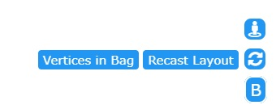
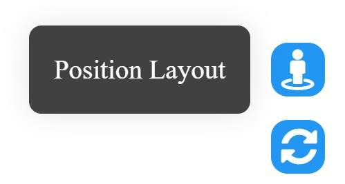
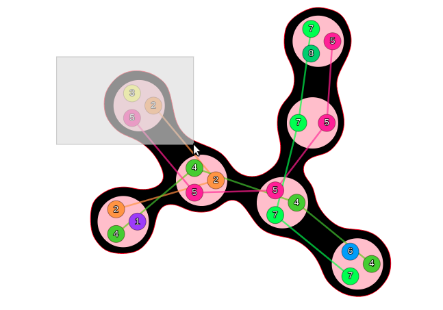
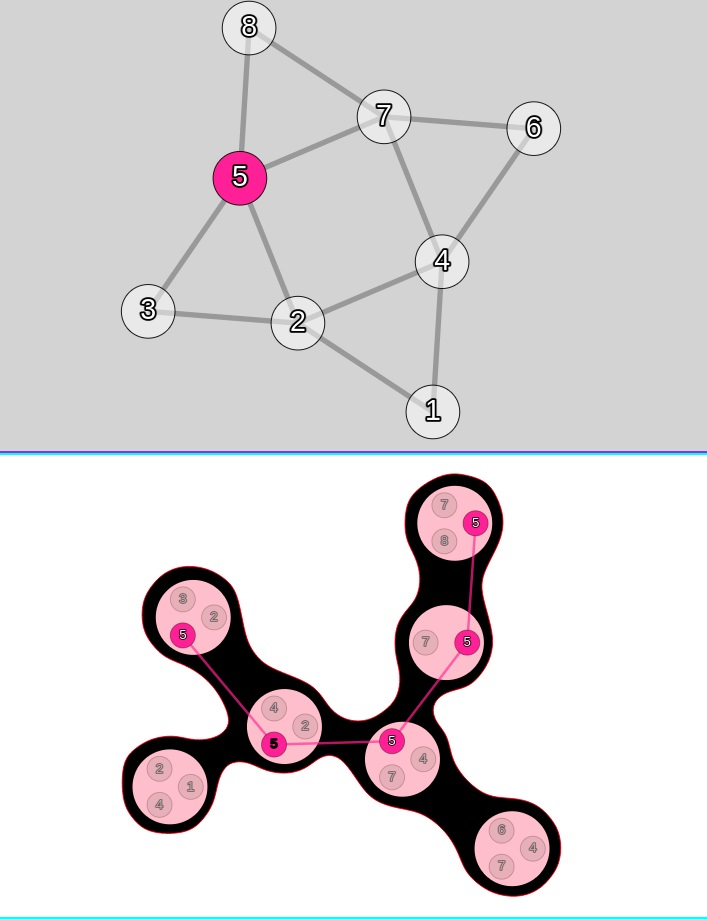
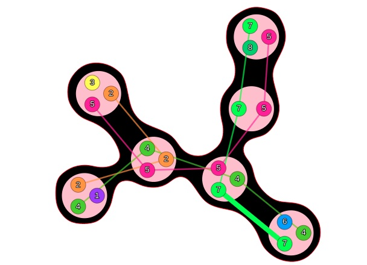
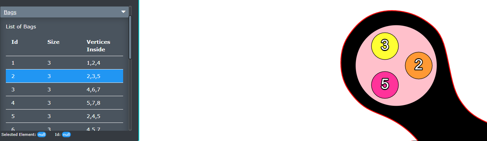
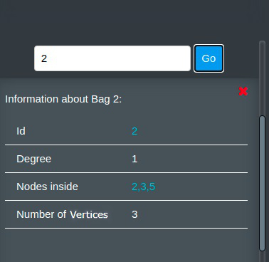

Recommended Requirements: Chrome 87+ or Firefox 8.0 +
Using Data Files:
It is possible to upload on or two files.
Upload one file:
The file must be in the .gr or .dgf format.
Example .gr File
Inside this example, the line that start with p has some important information.
The first value 8 after tw, stands for the number of vertices in the graph
which is followed by the number of edges.
Edges are defined by 2 vertices in one line.
Example .dgf File
This is the same graph also above in .gr. In this case, the line starts also with p which contains important information.
The first value 8 after edges, stands for the number of vertices in the graph
which is followed by the number of edges.
Each edge is defined by 2 vertices in one line which begins with the character e in the line.
Upload two file:
One file must be from the .gr or dgf format and the other one in the .td format. This option can be used if you already have used a pace algorithm on your own computer.
Interactions and Functions
Change Algorithm
Hide Window
The tree or the graph can be hidden.
Reset Graph/Tree Layout

Reset Graph/Tree Origin-Position

Select a lot of Elements
Press shift so select a specific amount of elements to move them.

Select a Node for Value-Path in Tree
Select a node inside the tree to see the connected path.

Select a Edge
The selected edge is highlighted.

Select a Bag-Information
Select a bag-information to zoom to the specific bag.

Serch for Information
Search for information to recieve information.
